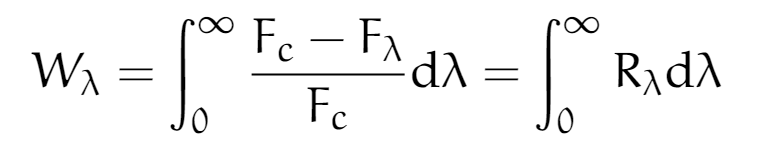
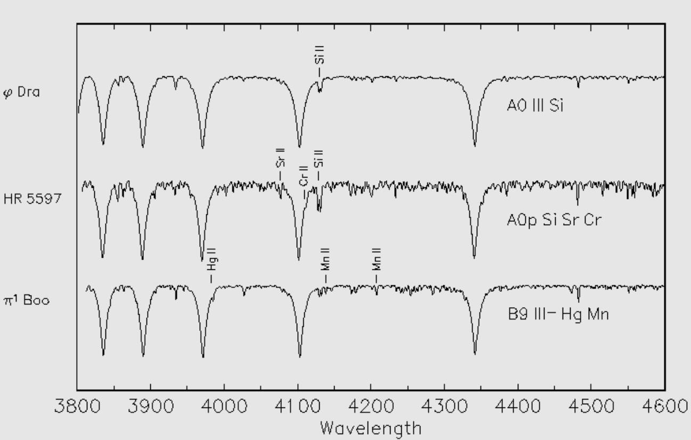

Estrellas químicamente peculiares
Autores: Gonzalez, Ezequiel, Mazzarella Bruno.
Resumen
Hace poco mas de 200 años, gracias al descubrimiento de los espectros estelares y su análisis, se dio paso a una nueva rama de la física: la espectroscopia, con la cual la astronomía empezó un proceso de búsqueda, clasificación, catalogación y entendimiento acerca de la composición atómica e isotópica de las estrellas. En la primera mitad del siglo XX, empezaron a aparecer estudios sobre estrellas en donde sus abundancias relativas no eran como las de la mayoría de las estrellas, es decir, estrellas químicamente peculiares. En este informe nos proponemos a explicar y entender el concepto de abundancias químicas, la razón de que algunas estrellas se consideren químicamente peculiares y cómo se clasifican las mismas.
1) El concepto de abundancias químicas.
Las estrellas son nubes de plasma caliente compuestas de átomos de distintos elementos que interactúan entre si emitiendo y absorbiendo energía. La composición química de dicho plasma es principalmente de hidrógeno, helio y otros elementos (a todo elemento que no sea hidrógeno o helio se los denomina metales). Cada estrella, dependiendo de varios factores (por ejemplo: temperatura, estadio evolutivo, medio circundante, etc) tiene una composición distinta.
1.1) Como deducir estas abundancias.
En la actualidad dichas composiciones, o abundancias, se las obtiene a partir de ajustar el espectro observado con espectros "teóricos" (espectros sintéticos). Los niveles de energía atómicos, y por ende, los espectros de absorción y emisión, son característicos de cada elemento. Así, cada línea corresponde a que un elemento químico ha absorbido fotones en su longitud de onda particular, y la composición química de la atmósfera puede inferirse a partir de sus líneas espectrales. Las diferencias en los espectros se deben tanto a la abundancia química como a la temperatura estelar.
Si bien en la mayoría de las estrellas se puede ajustar el espectro con algún espectro sintético, existen algunas estrellas cuyo espectro no ajusta con el espectro sintético que le correspondería, a estas estrellas con abundancias químicas distintas de lo esperado se las denomina estrellas químicamente peculiares.
1.2) Ancho equivalente y curva de crecimiento.
No siempre es posible hacer estudios tan detallados del perfil estelar (resolución espectral), por lo que es importante definir la cantidad de energía absorbida (o emitida) por una línea espectral.
El ancho equivalente de una línea se define como el ancho de una línea hipotética de forma rectangular que absorbe toda la radiación dentro de ella y absorbe la misma energía total que la linea a la que esta asociada. Esta puede obtenerse como el área total de la línea dividida por Fc , donde la división indica que el flujo es medido en unidades del continuo, es decir que Fc=1:
donde R es la profundidad de la línea lambda.

La dependencia del ancho equivalente de una línea con el numero de átomos que la producen se describe mediante una función llamada curva de crecimiento, y puede usarse para estimar la abundancia de un elemento de una estrella midiendo el ancho equivalente de sus líneas espectrales.
1.3) Abundancias estándar.
En la siguiente imagen, vemos una relación logarítmica entre las abundancias de distintos elementos en el sistema solar.


Por otro lado, en la imagen que sigue, vemos la relación logarítmica de abundancias de átomos en el sol en donde el 94% de su composición es hidrógeno.

El Sol se usa como referencia para muchas cuentas en el cálculo de abundancias debido a que, al ser la estrella más cercana, tenemos un estudio más preciso de su composición química.
2) Estrellas químicamente peculiares.
2.1) Introducción e historia.
A finales del siglo XIX y principios del siglo XX, los astrónomos, como las investigadoras estadounidenses Annie Jump Cannon (1863-1941) y Antonia Maury (1866-1952), notaron que las líneas atómicas en los espectros de ciertas estrellas estaban anormalmente fuertes o débiles en comparación con las estrellas típicas (o normales). En la actualidad, sabemos que estas peculiaridades se deben a que hay una sobreabundancia o deficiencia de los elementos que forman esas líneas en la superficie de estas estrellas (solo podemos hablar de abundancias superficiales dado que la radiación que nos llega es proveniente de las capas más superficiales de la atmósfera estelar).
Una teoría que surgió para explicar las abundancias de las estrellas químicamente peculiares es la difusión atómica, la cual también puede desempeñar un papel importante en la astrosismología. La difusión atómica es el movimiento relativo de los átomos en un gas que contiene al menos dos especies de átomos distintos. El mecanismo de difusión puede ser causado por varios procesos físicos (gravedad, campos magnéticos y aceleración radiativa entre otros), además la difusión puede ocurrir solo en estrellas donde el medio es hidrodinámicamente estable (es decir, en ausencia de convección o turbulencia, por ejemplo), por lo que no está presente en todos los tipos de estrellas.
2.2) Características generales.
Hay una gran variedad de estrellas químicamente peculiares, al tener distintas Teff (que varían en un rango de 7000-20000 K) pueden tener abundancias muy distintas entre si. Además, algunas estrellas poseen grandes campos magnéticos mientras que en otras los campos magnéticos son muy débiles. La presencia de grandes campos magnéticos tiene un papel importante en la difusión de los elementos, por lo que dos estrellas con la misma Teff pero con campos magnéticos muy distintos presentarán distintas abundancias.
Además de las abundancias peculiares, estas estrellas presentan todas una característica común: todas tienen velocidades de rotación bajas (Vsin(i) < 100 Km/seg) en comparación de las estrellas normales. Las bajas velocidades de rotación aseguran la estabilidad del medio necesaria para que sea posible la difusión atómica.
2.3) Clasificación.
En un inicio, el estudio de las estrellas químicamente peculiares se centró en la identificación de las líneas espectrales anómalas y poder clasificar estas estrellas. Recién en el ultimo cuarto del siglo XX, luego del estudio de numerosos investigadores, como el trabajo de Preston (1974) que presentó un esquema general de clasificación que es en esencia el usado hasta el día de hoy.
Los cuatro grupos de estrellas químicamente peculiares propuestos por Preston originalmente fueron llamados CP1, CP2, CP3 y CP4. Sin embargo, la nomenclatura más frecuentemente utilizada en la literatura científica actual es; las estrellas del tipo CP1 son las estrellas Am y Fm, la m hace referencia a la metalicidad, dado que presentan sobreabundancias de metales. Las estrellas estrellas del grupo CP2 son estrellas Ap y Bp, la p hace referencia a peculiar, dado que poseen grandes campos magnéticos. Las estrellas CP3 son las estrellas HgMn que presentan grandes sobreabundancias de mercurio y manganeso. Y el grupo CP4 son las llamadas estrellas He-débiles que son estrellas que presentan líneas de He muy débiles. Hay otro tipo de estrella químicamente peculiares que no encajan en ninguno de los 4 grupos de Preston, que son las estrellas con He-fuerte y 3He que las incluiremos con He-débil en un grupo llamado He-anormal.
2.3.1) Am y Fm:
Las estrellas Am y Fm son estrellas de secuencia principal con campos magnéticos débiles y temperaturas en un rango de 7000 K < Teff < 10000 K. Su principal característica es la deficiencia de los elementos Ca y Sc. Poseen una baja velocidad de rotación que se cree es debido a las fuerzas de marea de su compañera, ya que la mayoría de estas estrellas se encuentran en sistemas binarios.
2.3.2) Ap y Bp:
Son estrellas con un campo magnético muy fuerte con una Teff en el rango de los 7000 K a 15000 K. Sus campos magnéticos llegan a 104 Gauss en la superficie. Los elementos del pico de hierro son muy sobrebundantes en este tipo de estrellas (100 veces superior a la abundancia solar) mientras que los elementos del Z=57 al Z=71 (tierras raras) alcanzan una sobreabundancia de 105 respecto al Sol.
Los grandes campos magnéticos inhiben la posibilidad de movimientos convectivos en la atmósfera. Asumiendo esto, sucede que el proceso de difusión atómica es posible en la atmósfera de la estrella, a diferencia de las estrellas Am y Fm donde las abundancias anómalas provenían del interior de la estrella.
2.3.3) HgMn:
Las estrellas HgMn son estrellas de secuencia principal, con campos magnéticos débiles, y temperaturas en el rango de 10000 K < Teff < 15000 K. Estas estrellas presentan sobreabundancias muy grandes de Hg y Mn, llegando a ser, respectivamente, 106 y 104 veces su valor solar. Los elementos raros de la tierra (rare-earth elements) también son sobre abundantes, mientras que son generalmente deficientes en He.
Este tipo de estrella químicamente peculiar también muestra anomalías isotópicas. Por ejemplo en algunas estrellas HgMn las abundancias relativas de isótopos de Hg y Pt son muy diferentes de sus valores solares. Estas anomalías isotópicas posiblemente se deben al fenómeno físico llamado deriva inducida por la luz. Este fenómeno es el resultado de efectos colicionales, que teniendo en cuenta un perfil de linea de doppler y un flujo no constante (gradiente de flujo no nulo), genera que los isotopos de un elemento se separen.
2.3.4) He-anormales:
Este grupo de estrellas peculiares es el de mayor temperatura efectiva de los cuatro, y esta varia entre 14000 K < Teff < 20000 K. Existen varios tipos de estrellas anormales de helio. Las He-débiles son estrellas con deficiencia de helio con un factor entre 2 y 15 veces respecto al Sol. Este tipo de estrellas peculiares pueden tener campos magnéticos tanto fuertes como débiles. Las primeras son llamadas del tipo P-Ga (o a veces estrellas de fósforo). Estas poseen fósforo y galio con sobreabundancias de 100 y 105 respectivamente.
Otra subclase de He-débil son las llamadas estrellas 3He, las cuales poseen una anormalmente alta abundancia relativa entre 3He y 4He.
Finalmente, también existen las He-ricas, que son estrellas fuertemente sobreabundantes en helio. En la atmósfera de estas estrellas, la relación entre He e H puede alcanzar el factor de 10.
2.3.5) Espectros.
Para observar las estrellas peculiares, vemos en la siguiente imagen 3 espectros. En el primero se observa el de la estrella peculiar Am phi dra, en el segundo de la estrella de tipo Ap de nombre HR 5597, y el tercero proviene de la estrella peculiar de HgMn pi1 Boo.

En la siguiente imagen vemos una comparación entre una estrella B2.5V normal y una estrella que, teniendo en cuenta el resto de las líneas debería ser una B2 V pero presenta líneas anormalmente fuertes de He.

Por otro lado, en la siguiente imagen vemos una estrella que, teniendo en cuenta el resto del espectro debería caer entre una B3 V y una B5 V, pero que si comparamos las líneas de He con ambos espectros, estas son anormalmente débiles.

Conclusiones
La formación y evolución de la mayoría de las estrellas suele tener un comportamiento definido que nos permite catalogarlas, estudiarlas, entenderlas y diferenciarlas. Sin embargo, en algunos casos, la interacción entre estrellas, el medio interestelar circundante, rotaciones lentas y campos magnéticos muy débiles o muy fuertes pueden hacer que algunas estrellas difieran notablemente de ese comportamiento, traduciéndose esto en una composición química distinta y particular respecto a las estrellas estándares.
Referencias
- Roberto Gamen - Apuntes de la cátedra de Astronomía Estelar de la FCAGLP.
- Francis LeBlanc - An Introduction to Stellar Astrophysics.
- Atlas digital de clasificación espectral de Richard Gray. ( http://ned.ipac.caltech.edu/level5/Gray/frames.html )
- Gonzalez, J. F.: 2020, Estrellas de mercurio-manganeso: Avances recientes y cuestiones pendientes.
- Smith, C. Keith: 1996, Chemically peculiar hot stars.
- F. LeBlanc, G. Michaud: 1993, Light-induced drift and abundance anomalies.
- http://www.astronoo.com/es/articulos/abundancia-de-los-elementos.html.